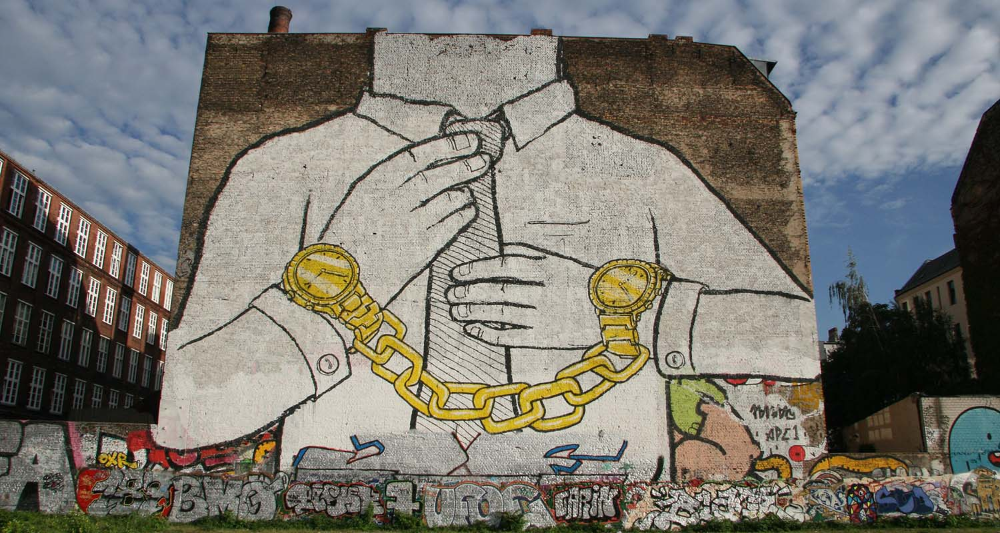

Tema 10: Desarrollo de Pieza Gráfica.

Nencatacoa, Diario de Campo
Para este proyecto el objetivo es hacer uso de la herramienta virtual Nencatacoa como apoyo educativo.
Las estudiantes tendrán acceso a un prototipo de la biblioteca virtual, la cual incluye 1 curso donde el tema principal es un acercamiento a conceptos básicos del arte urbano, y en la cual se tienen unos cuantos temas de apoyo como la importancia del color, impacto de la tipografía e identidad de marca.
El objetivo de este proceso es el desarrollo de una pieza gráfica de libre elección, en donde se deben aplicar los conceptos aprendidos en el curso y documentar los avances en este diario de campo.
Adicionalmente, se debe montar este diario de campo, fotografías de la pieza gráfica realizada, y una fotografía o foto escaneada del consentimiento informado en la carpeta de google drive.
Carpeta de google Drive:
- Diario de Campo
Descarga el diario de Campo
Instrucciones básicas del trabajo:
- Ver página web: Biblioteca Arte y Cultura: Nencatacoa
- Revisión de conocimientos sobre técnicas de Arte Urbano
- Ver imágenes y vídeos, con un énfasis del Tema 6: Técnicas de Arte Urbano
- En este diario de campo debes registrar tu proceso de aprendizaje según vayas avanzando en los temas y en el proceso de tu pieza:
- Cada día en que revises o avances con los temas, crea una nueva página y registra el día, decide un título y anota 1 o 2 párrafos donde expliques que aprendiste del contenido que hayas leído y visto en los videos.
- Utiliza el material que tengas disponible para realizar una pieza o intervención artística. En el diario de campo Registra lo siguiente:
- Cual es tu idea que planeas realizar como una pieza gráfica
- Que materiales planeas usar
- Cuanto tiempo le vas a dedicar a la pieza
- Registra tu proceso, puedes incluir ideas, dibujos, bocetos y demas e incluirlos en este documento.
- Representa la técnica que más te agrada y describe
- Cual es el mensaje que deseas transmitir con la pieza
- Cuales son las técnicas gráficas que usaste y porque
- Subir tu producción artística, junto a este diario de campo y el consentimiento informado firmado a: